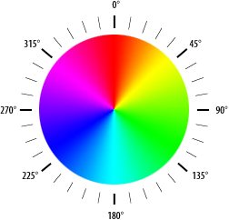
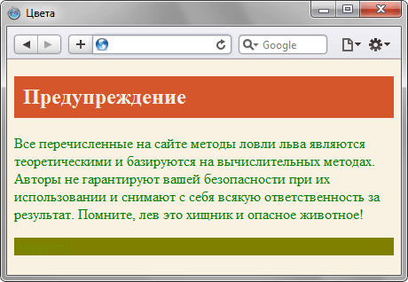

Цвет
Цвет в стилях можно задавать разными способами: по шестнадцатеричному значению, по названию, в формате RGB, RGBA, HSL, HSLA.
По шестнадцатеричному значению
Для задания цветов используются числа в шестнадцатеричном коде. Шестнадцатеричная система, в отличие от десятичной системы, базируется, как следует из её названия, на числе 16. Цифры будут следующие: 0, 1, 2, 3, 4, 5, 6, 7, 8, 9, A, B, C, D, E, F. Цифры от 10 до 15 заменены латинскими буквами. Числа больше 15 в шестнадцатеричной системе образуются объединением двух чисел в одно. Например, числу 255 в десятичной системе соответствует число FF в шестнадцатеричной системе. Чтобы не возникало путаницы в определении системы счисления, перед шестнадцатеричным числом ставят символ решетки #, например #666999. Каждый из трех цветов — красный, зеленый и синий — может принимать значения от 00 до FF. Таким образом, обозначение цвета разбивается на три составляющие #rrggbb, где первые два символа отмечают красную компоненту цвета, два средних — зеленую, а два последних — синюю. Допускается использовать сокращенную форму вида #rgb, где каждый символ следует удваивать. Так, запись #fe0 следует расценивать как #ffee00.
По названию
Браузеры поддерживают некоторые цвета по их названию. В табл. 1 приведены названия, шестнадцатеричный код, значения в формате RGB, HSL и описание.
| Имя | Цвет | Код | RGB | HSL | Описание |
|---|---|---|---|---|---|
| white | #ffffff или #fff | rgb(255,255,255) | hsl(0,0%,100%) | Белый | |
| silver | #c0c0c0 | rgb(192,192,192) | hsl(0,0%,75%) | Серый | |
| gray | #808080 | rgb(128,128,128) | hsl(0,0%,50%) | Темно-серый | |
| black | #000000 или #000 | rgb(0,0,0) | hsl(0,0%,0%) | Черный | |
| maroon | #800000 | rgb(128,0,0) | hsl(0,100%,25%) | Темно-красный | |
| red | #ff0000 или #f00 | rgb(255,0,0) | hsl(0,100%,50%) | Красный | |
| orange | #ffa500 | rgb(255,165,0) | hsl(38.8,100%,50%) | Оранжевый | |
| yellow | #ffff00 или #ff0 | rgb(255,255,0) | hsl(60,100%,50%) | Желтый | |
| olive | #808000 | rgb(128,128,0) | hsl(60,100%,25%) | Оливковый | |
| lime | #00ff00 или #0f0 | rgb(0,255,0) | hsl(120,100%,50%) | Светло-зеленый | |
| green | #008000 | rgb(0,128,0) | hsl(120,100%,25%) | Зеленый | |
| aqua | #00ffff или #0ff | rgb(0,255,255) | hsl(180,100%,50%) | Голубой | |
| blue | #0000ff или #00f | rgb(0,0,255) | hsl(240,100%,50%) | Синий | |
| navy | #000080 | rgb(0,0,128) | hsl(240,100%,25%) | Темно-синий | |
| teal | #008080 | rgb(0,128,128) | hsl(180,100%,25%) | Сине-зеленый | |
| fuchsia | #ff00ff или #f0f | rgb(255,0,255) | hsl(300,100%,50%) | Розовый | |
| purple | #800080 | rgb(128,0,128) | hsl(300,100%,25%) | Фиолетовый |
С помощью RGB
Можно определить цвет, используя значения красной, зеленой и синей составляющей в десятичном исчислении. Каждая из трех компонент цвета принимает значение от 0 до 255. Также допустимо задавать цвет в процентном отношении, при этом 100% будет соответствовать числу 255. Вначале указывается ключевое слово rgb, а затем в скобках, через запятую указываются компоненты цвета, например rgb(255, 128, 128) или rgb(100%, 50%, 50%).
RGBA
Формат RGBA похож по синтаксису на RGB, но включает в себя альфа-канал, задающий прозрачность элемента. Значение 0 соответствует полной прозрачности, 1 — непрозрачности, а промежуточное значение вроде 0.5 — полупрозрачности.
RGBA добавлен в CSS3, поэтому валидацию CSS-кода надо проводить именно по этой версии. Следует отметить, что стандарт CSS3 еще находится в разработке и некоторые возможности в нем могут поменяться. К примеру, цвет в формате RGB добавленный к свойству background-color проходит валидацию, а добавленный к свойству background уже нет. При этом браузеры вполне корректно понимают цвет для того и другого свойства.
HSL
Название формата HSL образовано от сочетания первых букв Hue (оттенок), Saturate (насыщенность) и Lightness (светлота). Оттенок это значение цвета на цветовом круге (рис. 1) и задаётся в градусах. 0° соответствует красному цвету, 120° — зелёному, а 240° — синему. Значение оттенка может изменяться от 0 до 359.

Рис. 1. Цветовой круг
Насыщенностью называется интенсивность цвета, измеряется в процентах от 0% до 100%. Значение 0% обозначает отсутствие цвета и оттенок серого, 100% максимальное значение насыщенности.
Светлота задает, насколько цвет яркий и указывается в процентах от 0% до 100%. Малые значения делают цвет темнее, а высокие светлее, крайние значения 0% и 100% соответствуют чёрному и белому цвету.
HSLA
Формат HSLA похож по синтаксису на HSL, но включает в себя альфа-канал, задающий прозрачность элемента. Значение 0 соответствует полной прозрачности, 1 — непрозрачности, а промежуточное значение вроде 0.5 — полупрозрачности.
Значения цвета в форматах RGBA, HSL и HSLA добавлены в CSS3, поэтому при использовании этих форматов проверяйте код на валидность с учётом версии.
Пример
<!DOCTYPE html>
<html>
<head>
<meta charset="utf-8">
<title>Цвета</title>
<style>
body { background-color: #F9F2E3; }
h2 {
background-color: rgb(214,86,43);
color: rgba(255,255,255,.9);
padding: 10px;
}
p { color: green; }
div {
background-color: hsl(60,100%,25%);
color: hsla(120,100%,50%,0.1);
}
</style>
</head>
<body>
<h2>Предупреждение</h2>
<p>Все перечисленные на сайте методы ловли льва являются теоретическими
и базируются на вычислительных методах. Авторы не гарантируют вашей
безопасности при их использовании и снимают с себя всякую
ответственность за результат. Помните, лев это хищник и
опасное животное!</p>
<div>Арррргх!</div>
</body>
</html>Результат данного примера показан на рис. 2.

Рис. 2. Цвета на веб-странице
Спецификация
| Спецификация | Статус |
|---|---|
| CSS Color Module Level 4 | Редакторский черновик |
| CSS Color Module Level 3 | Рекомендация |
| CSS Level 2 (Revision 1) | Рекомендация |
| CSS Level 1 | Рекомендация |
Браузеры
| Internet Explorer | Chrome | Opera | Safari | Firefox | |
| #RRGGBB | #RGB | 3 | 1 | 3.5 | 1 | 1 |
| Названия | 3 | 1 | 3.5 | 1 | 1 |
| rgb() | 4 | 1 | 3.5 | 1 | 1 |
| hsl() | 9 | 1 | 9.5 | 3.1 | 1 |
| rgba() | 9 | 1 | 10 | 3.1 | 3 |
| hsla() | 9 | 1 | 10 | 3.1 | 3 |
| transparent | 9 | 1 | 10 | 3.1 | 3 |
| Android | Firefox Mobile | Opera Mobile | Safari Mobile | |
| #RRGGBB | #RGB | 1 | 1 | 1 | 1 |
| Названия | 1 | 1 | 1 | 1 |
| rgb() | 1 | 1 | 1 | 1 |
| hsl() | 1 | 1 | 10 | 4 |
| rgba() | 4 | 4 | 10 | 4 |
| hsla() | 4 | 4 | 10 | 4 |
| transparent | 4 | 4 | 10 | 4 |